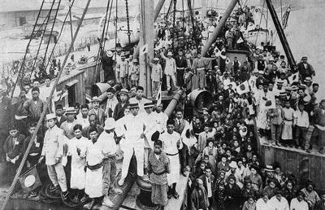
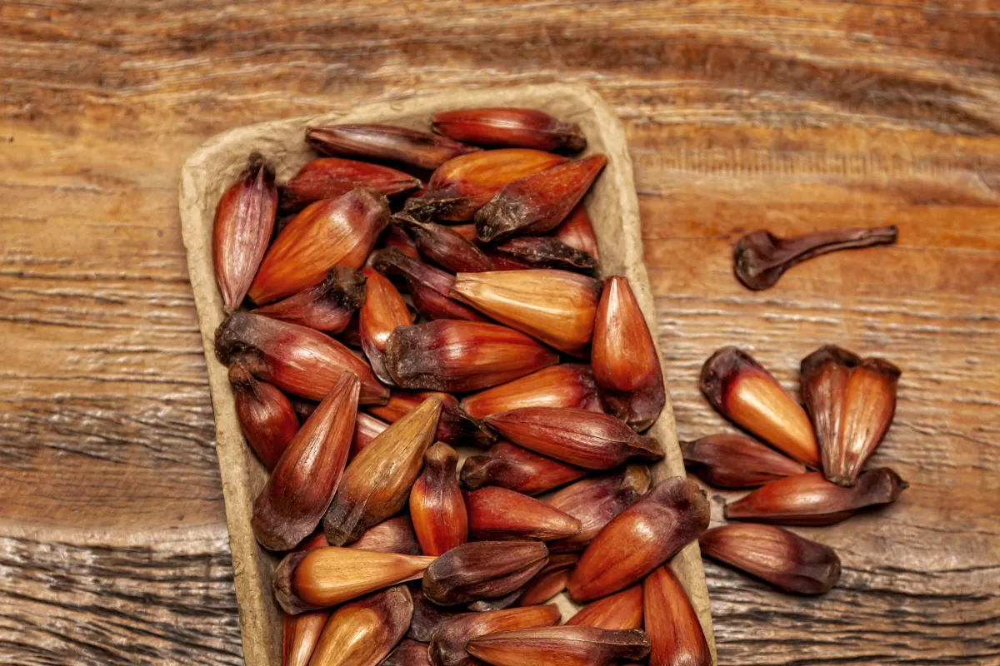
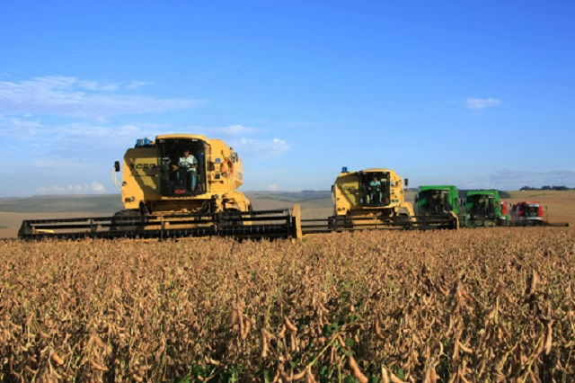

SEJAM BEM VINDOS AO MEU SITE
Quando falamos em uma terra de gigantes, nos referimos tanto à imponência de suas grandes obras e riquezas — como a Usina Hidrelétrica de Itaipu e a força estrondosa do seu agronegócio — quanto à grandiosidade cultural dos imigrantes que aqui moldaram uma identidade plural.

Culturas do Paraná
O Paraná foi colonizado por uma fusão rica de povos nativos indígenas, tropeiros e ondas massivas de imigrantes (poloneses, ucranianos, italianos, alemães, japoneses e alemães).

Imigrantes no Paraná
O Paraná é o terceiro estado brasileiro que mais recebe imigrantes no país, abrigando dezenas de nacionalidades. A população estrangeira é formada tanto pela imigração histórica europeia e asiática do século XIX e XX quanto por fluxos contemporâneos latino-americanos e caribenhos em busca de oportunidades de trabalho e segurança Principais Origens: A maior parte dos recém-chegados é da América Latina e do Caribe, com forte presença de venezuelanos, haitianos, paraguaios, argentinos e cubanos. Distribuição: Curitiba e Região Metropolitana concentram o maior volume de registros, seguidas por regiões de fronteira como Foz do Iguaçu e municípios agrícolas do interior.

Curiosidades
Semente da Araucária
O pinhão é a semente da Araucaria angustifolia, árvore popularmente conhecida como araucária ou pinheiro-do-paraná.
Alimento de Inverno
O pinhão é mais consumido durante o outono e o inverno, sendo um dos alimentos mais tradicionais da Região Sul.
Receitas Tradicionais
O pinhão pode ser preparado de várias formas, como cozido, assado ou utilizado em bolos, farofas e outros pratos.
Referências
Governo do Estado do Paraná. Informações sobre a cultura e a importância do pinhão no estado.
Embrapa. Informações sobre a araucária e espécies nativas da Região Sul do Brasil.
Instituto Água e Terra do Paraná. Informações sobre a preservação da araucária.
memoria e imagens sobre Pinhão
Vou compartilhar imagens sobre pinhão